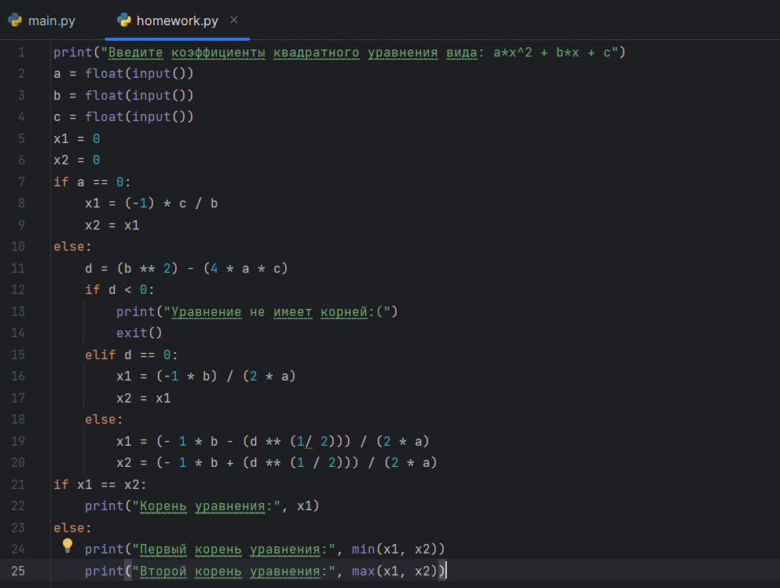
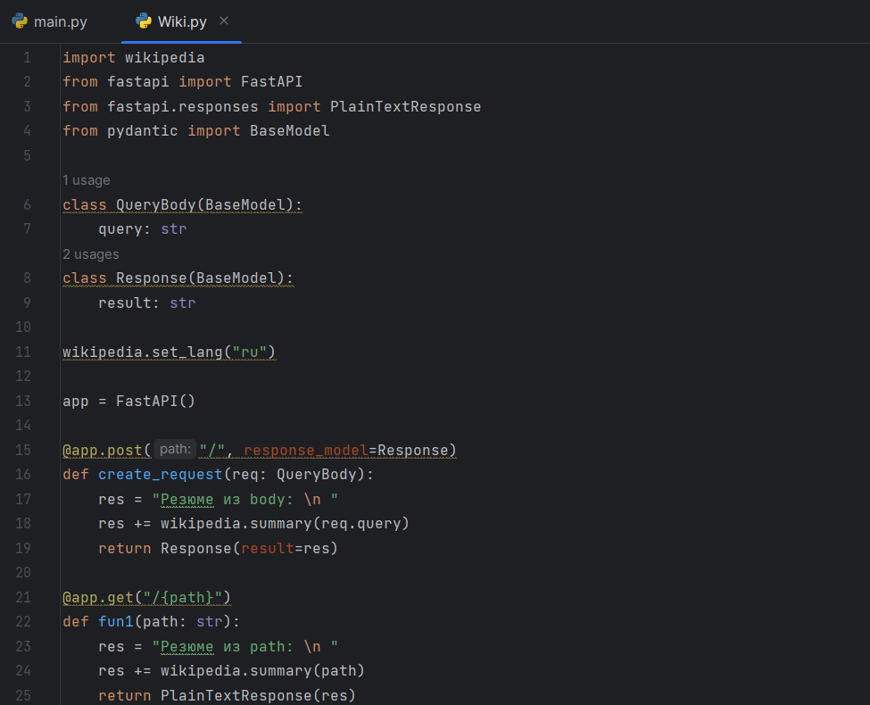
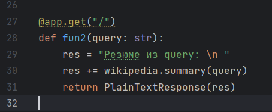
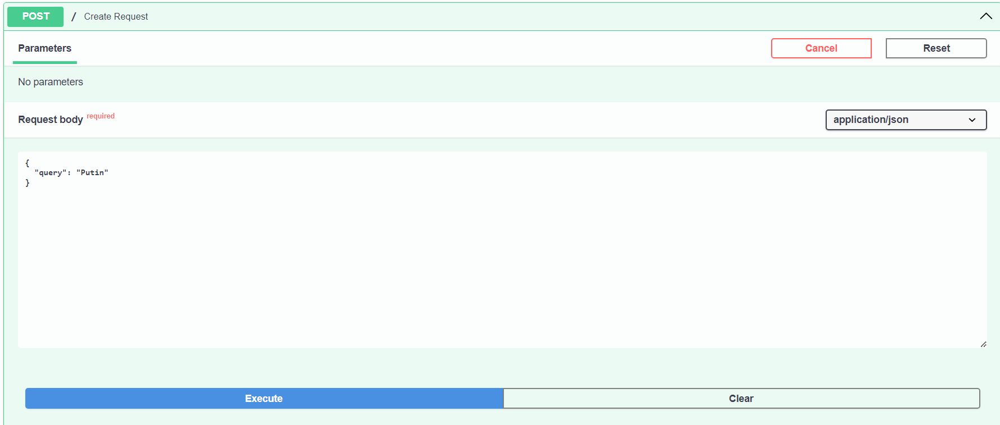
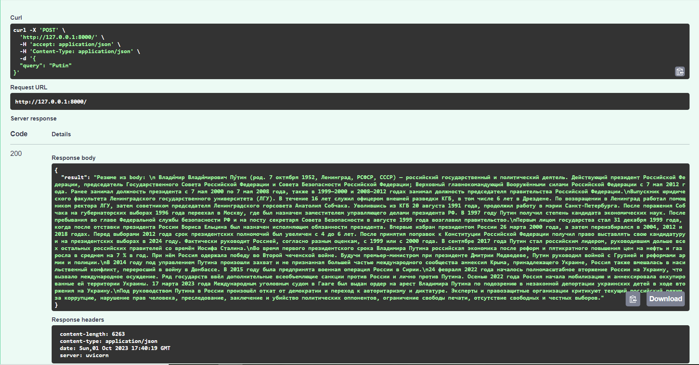

Здесь я написала программу, которая корректно находит корни квадратного уравнения по трём введённым коэффициентам.
Ознакомиться можно на GitHub по следующей ссылке: Лабораторная номер 1

С помощью библиотеки FastAPI мне удалось создать простой REST сервис, использующий библиотеку Wikipedia.
Ознакомиться можно на GitHub по следующей ссылке: Лабораторная номер 2
   